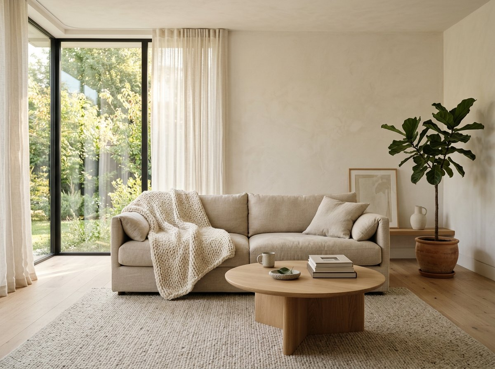
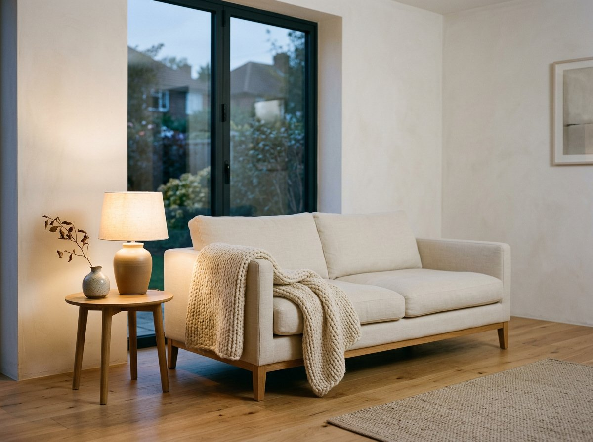
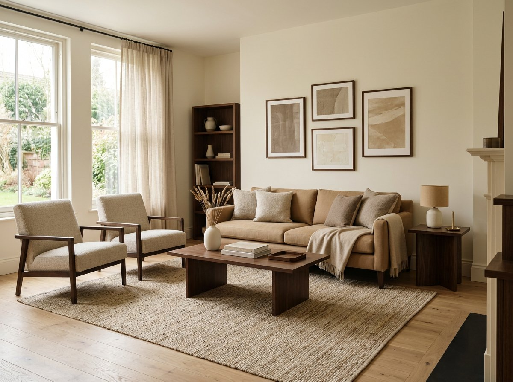
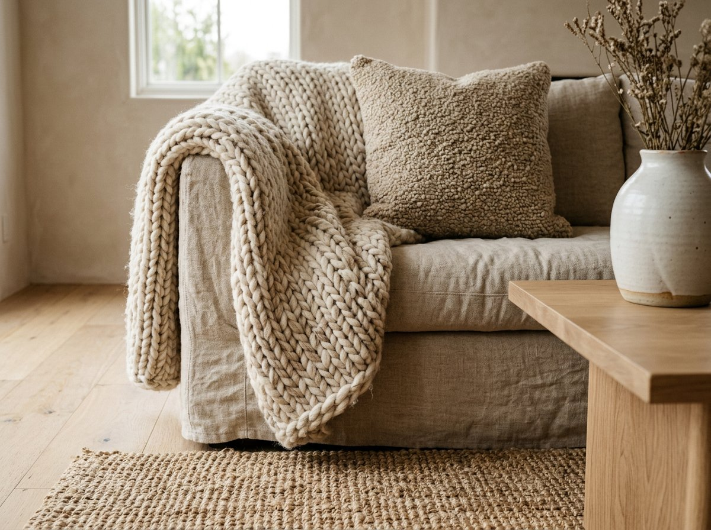
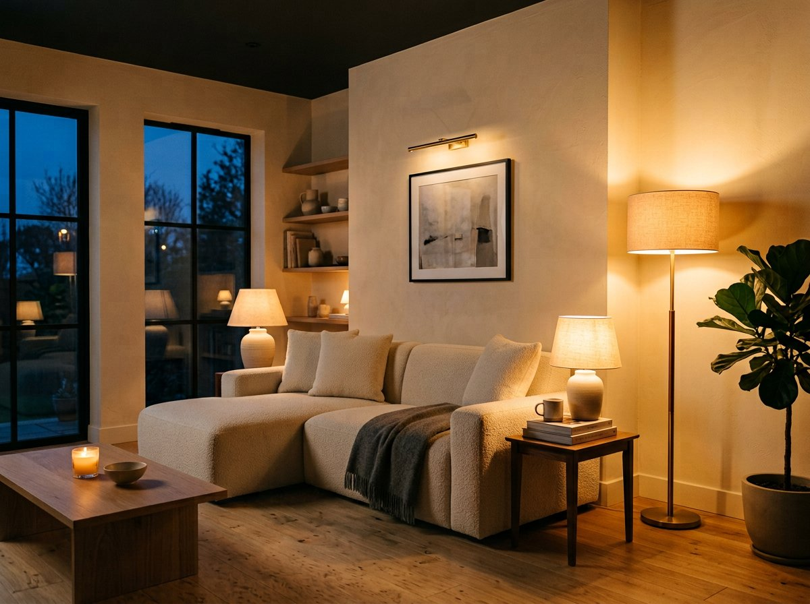
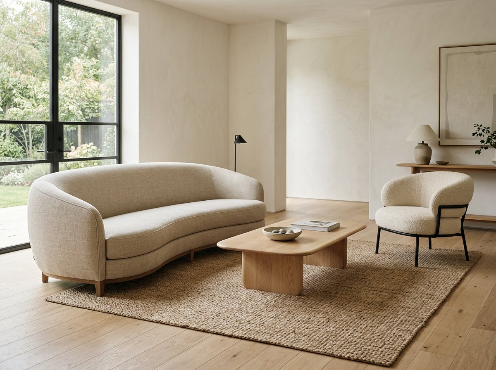
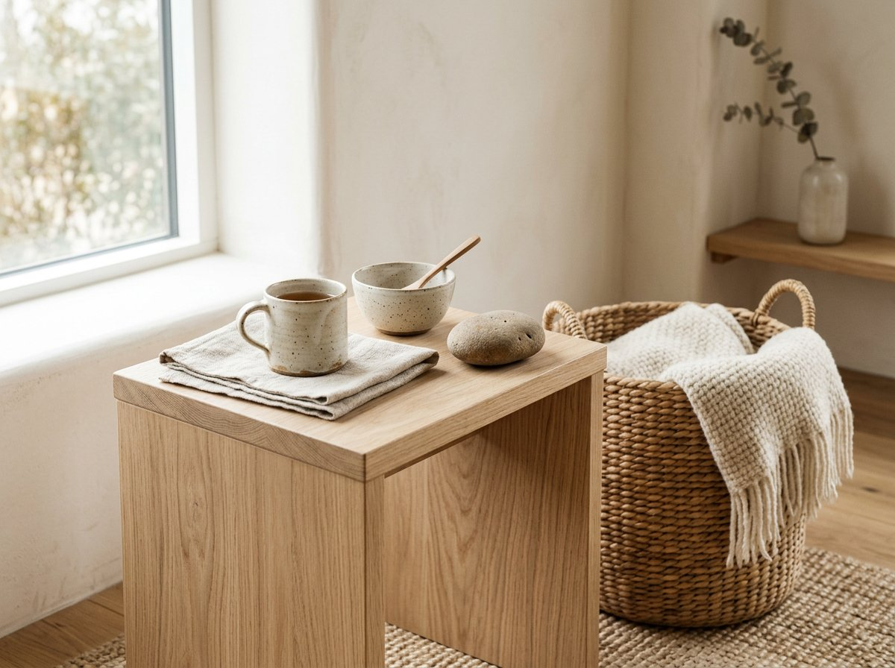
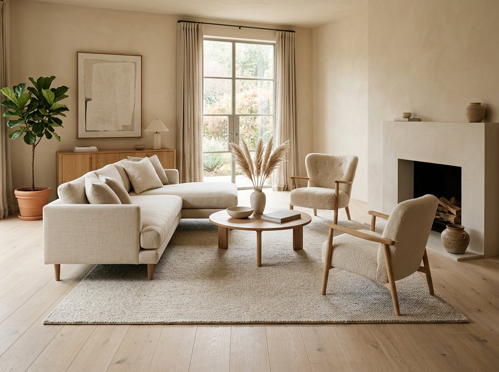
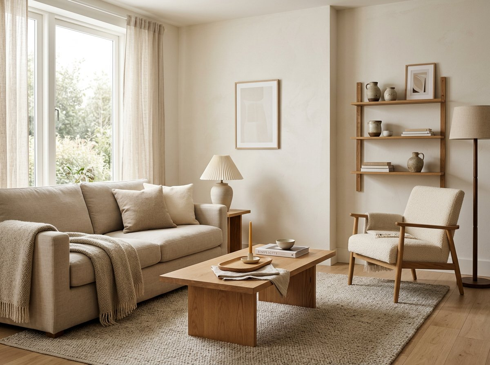
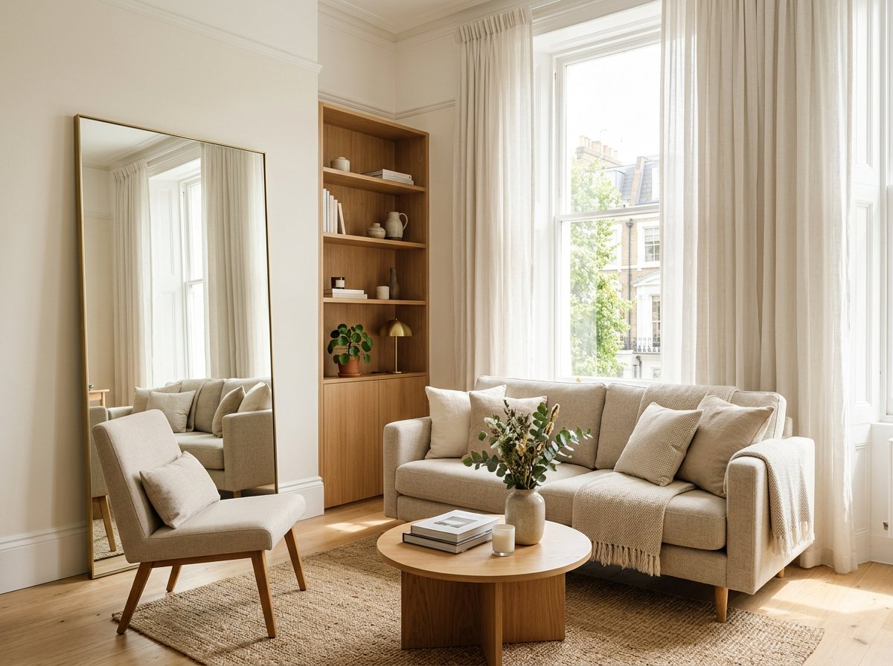

Minimalist Cozy Interiors: 13 Ideas for a Simple Home That Feels Warm
Minimalist cozy design sits between stark and cluttered: a calm, uncluttered home that still makes you want to sink into the sofa with a blanket. Here are 13 ideas that actually work in real rentals and small spaces.

Most minimalist rooms look great in a photo and feel a little cold in person. Most cozy rooms feel great to sit in but get cluttered fast. Minimalist cozy interior design sits between the two: a calm, uncluttered home that still makes you want to sink into the sofa with a blanket.
This guide covers how to get there. You'll find ideas for color, texture, lighting, furniture, and each main room, plus the mistakes that make a simple home feel like a waiting room. Save the sections you like to a Pinterest board and come back to them while you shop or plan your next home renovation.
What minimalist cozy actually means

Minimalism, in decor terms, means owning and displaying fewer things and choosing each one on purpose. Cozy means the room feels physically comfortable and emotionally warm. The two goals sound opposed because many people assume cozy needs lots of stuff: piles of cushions, shelves of knickknacks, every surface covered.
It doesn't. A room feels cozy because of how it handles light, texture, and comfort, and those don't depend on quantity. One thick wool throw on a good sofa does more than ten thin cushions. One lamp with a warm bulb does more than a bright ceiling light and three candles.
So the working rule is simple. Cut the visual noise, then put your effort into the things you touch and the light you sit under.
1. Build around a warm neutral color palette

Color is the fastest way to shift a room from sterile to soft. Cool whites and pure grays tend to read as clinical. Warm neutrals feel gentler: cream, oatmeal, sand, greige, soft taupe, and warm white.
A practical approach is to pick one main wall color, one deeper accent tone, and one dark contrast. For example, a warm white wall, a camel or caramel sofa, and black or dark walnut details in the frames and furniture legs. Repeating those same few tones across the room is what makes it look calm and designed.
If you rent and can't repaint, bring the palette in through bedding, curtains, an area rug, and a large piece of art instead. Curtains alone can change how a room feels, especially if you swap thin white panels for a heavier linen in a warm shade.
Sample paint colors on the wall and look at them in the morning and in the evening. Neutrals change a lot with the light, and a cream that looks perfect at noon can turn yellow under evening bulbs.
2. Layer textures instead of adding objects

Texture is the secret to a minimalist room that doesn't look flat. When your color palette is limited, texture does the work that pattern and color would normally do.
Mix materials that feel different under your hand. A smooth ceramic vase next to a nubby boucle chair. A chunky knit throw over a linen sofa. A jute rug under a wooden coffee table. A rough plaster wall finish behind a soft cotton bedspread.
You don't need many pieces. Aim for three or four distinct textures in each room and let them repeat. If there's wool in the throw, put a little wool somewhere else, like a pillow or a rug. Repetition keeps layered texture from looking random.
This is also where your decor budget is best spent. A single quality throw, a good set of linen curtains, or a well-made rug will earn its place every day.
3. Get the lighting right, because it matters more than the furniture

If you change only one thing, change the lighting. Harsh overhead light is the main reason a tidy room can still feel unwelcoming.
Use layered lighting instead. That means three kinds working together: ambient light for general brightness, task light for reading or cooking, and accent light for atmosphere. In practice, it looks like a floor lamp in the corner, a table lamp by the sofa, and maybe a small picture light or a candle on a shelf.
Check the bulbs too. Warm white bulbs, usually labeled around 2700K, give the amber glow people associate with a cozy room. Bulbs labeled cool white or daylight make a room feel like an office. If you're upgrading your home lighting, dimmers and smart bulbs let you lower the brightness in the evening without buying new fixtures.
Choose lamps with simple shapes and soft shades. Paper, linen, and frosted glass diffuse light gently, which helps in a minimalist room where there's less clutter to absorb glare.
4. Buy fewer, better furniture pieces

A minimalist home has fewer pieces, so each one gets noticed. That's a good reason to invest in the furniture you use most, which is usually the sofa, the bed, and the dining table.
Look for clean lines and rounded edges. Curved sofas, round coffee tables, and arched mirrors soften a room that could otherwise feel boxy. Natural wood in a light or medium tone adds warmth, while black metal legs give a bit of contrast without fuss.
Comfort has to come first. A sofa that looks beautiful and feels hard will end up unused, and then the whole room fails. Sit on it before you buy it if you can, and check the depth of the seat, the firmness of the cushions, and how the fabric feels.
5. Choose natural materials

Natural materials make a simple room feel grounded. Wood, linen, cotton, wool, stone, clay, rattan, and jute all bring variation that synthetic materials struggle to copy. The grain in wood and the slight unevenness in handmade ceramics keep a minimalist space from feeling mass produced.
You can use them in small ways. A wooden bowl on the dining table. A stoneware mug collection on an open shelf. A woven basket for blankets. A linen duvet cover on the bed. None of these are expensive individually, and together they set the tone.
Natural materials also age well. Linen softens after each wash, and wood picks up a patina. A minimalist cozy home should look better as it gets lived in, not worse.
6. Anchor each room with a good area rug

An area rug does a lot in a minimalist room. It defines the seating area, warms the floor, softens sound, and adds texture without needing any extra objects.
Size matters most. A rug that's too small makes furniture look like it's floating. In a living room, the front legs of your sofa and chairs should sit on the rug. In a bedroom, the rug should extend beyond the sides and foot of the bed so your feet land on something soft in the morning.
For a minimalist look, pick a solid color or a subtle texture over a loud pattern. Wool and wool blends feel good underfoot, and a low pile is easier to keep clean. A neutral rug in a slightly different shade from your floor adds depth without competing with anything else.
7. The minimalist cozy living room

The living room is where this style gets tested, because it has to work for guests, family, and quiet evenings alone.
Start with a comfortable sofa in a warm neutral and add one or two accent chairs rather than a large sectional if your space is small. Keep the coffee table low and mostly clear, with a tray holding a candle and a book. Add a floor lamp and a table lamp, a textured throw, and two or three cushions in tones that repeat elsewhere.
Limit the shelving to a few deliberate groupings. A common designer trick is to leave some empty space around objects so each one reads as a choice. Put your TV on a simple console or wall mount, and hide cables, since visible cords are some of the worst visual clutter in a living room.
8. Small living room ideas that make it feel bigger

Smaller spaces suit this style well because minimalism is partly about making the most of limited square footage. Choose furniture with legs so you can see the floor underneath, which makes a room feel bigger. Use a large mirror opposite a window. Hang curtains high and wide so the windows look taller. Keep the palette tight, since too many colors chop up a small room.
Pro tip — Small space
If you have a corner sofa in a small living room, keep the coffee table round and the rug large. It keeps walkways clear and stops the room feeling cramped. See our corner sofa layouts guide for 9 tested arrangements.
9. The minimalist cozy bedroom
The bedroom is the easiest room to get right, because the bed does most of the work.
Invest in bedding. A good mattress, quality sheets, a warm duvet, and a throw folded at the foot of the bed will do more for sleep and comfort than any decor. Linen and washed cotton in warm whites, beige, or soft earth tones look relaxed and slightly rumpled in a good way.
Keep the nightstands simple: a lamp, a book, a glass of water. Use warm bedside lamps instead of the overhead light after dark. Add blackout or heavy curtains if streetlight or morning sun disturbs your sleep, and choose a color close to the walls so they blend in.
Leave the walls mostly bare, or hang one large piece of art above the headboard. Under the bed and inside the closet is where your clutter should go. The surfaces in a bedroom should feel almost empty.
10. Kitchen and dining ideas
A minimalist kitchen can feel cold because of all the hard surfaces. Warm it up with wood: a wooden cutting board on the counter, open shelving in oak or walnut, or wood stools at the island.
Clear the countertops of everything except what you use daily. A coffee maker, a small plant, and a bowl of fruit are plenty. Put the rest in cabinets. If you're planning a kitchen remodel, matte finishes, handleless cabinets, and warm white or soft greige paint keep the look clean while staying inviting.
In the dining area, a solid wood table with simple chairs and a ceramic bowl in the center is all you need. Hang a pendant light low over the table, since a warm pool of light over where people eat is one of the quickest ways to make a space feel intimate.
11. Make your entryway welcoming
The entryway sets the first impression, and it's often where clutter piles up. Keep it simple with a narrow console or bench, a few wall hooks, a basket for shoes, and a mirror. A small lamp or a wall sconce gives the space a soft welcome when you come home.
If you're short on room, wall hooks and a slim shoe rack work as well as furniture. The goal is that coats, bags, and keys each have a place, so they don't end up across the sofa.
12. Declutter first, then add warmth
You can't layer coziness on top of chaos. Before you buy anything new, go through each room and remove what you don't use or love.
A manageable method is to work one surface at a time. Clear the coffee table, the kitchen counter, the dresser top, and the bathroom shelf. Put back only what earns its spot. Everything else gets stored, donated, or sold.
Good home storage is what keeps the result lasting. Closed cabinets, lidded boxes, baskets, and under-bed drawers hide the daily mess so your surfaces can stay calm. Choose storage in the same materials and tones as your decor, so the storage looks like part of the design.
13. Bring in plants and wall art with restraint
Plants add life, color, and softness, and they work with a minimal palette because green goes with every neutral. One large plant in a corner, like a fiddle leaf fig or a rubber plant, can serve as living sculpture.
For walls, pick one large piece or a small, tidy group, and leave space around it. Soft abstract prints, line drawings, black and white photography, and muted landscape art all suit a warm neutral room. Frame them in thin wood or black frames with generous white mats, and hang art lower than you think — center around eye level so it relates to the furniture below.
Common mistakes to avoid
- Going too white and too bare: Add soft materials until it feels lived-in, not like a showroom.
- Relying on overhead lighting: Add lamps before you add anything else.
- Buying matching sets: Mixing woods, fabrics, and shapes looks more natural.
- Ignoring scale: Measure rugs and sofas — too small feels unfinished, too big crowds a small room.
- Copying a photo exactly: Pinterest rooms are styled for a camera. Your home needs places for chargers, toys, laundry.
Final thoughts
A minimalist cozy home comes down to a few decisions repeated consistently. Keep a warm, limited color palette. Put effort into texture and lighting. Buy fewer pieces and make them comfortable. Clear your surfaces and give everything a home.
Start with one room, ideally the one where you spend the most time, and change one thing this week: swap a bulb, add a throw, clear a table. You'll see quickly how much of coziness comes from small changes rather than a big spend.
Save this idea for laterPin the graphic below to your living room board so you can find it when you are ready to shop.
Copy-and-paste pin title & description
Pin title: Minimalist Cozy Interiors: 13 Ideas for a Simple Home That Feels Warm
Pin description: Most minimalist rooms look great in a photo and feel cold in person. These 13 cozy minimalist ideas add warmth with texture, lighting and fewer, better pieces — no clutter needed. #minimalist #cozyinteriors #warmminimalism
Join the conversation
Comments
Anonymous on top — no login, no GitHub. GitHub comments below.
No comments yet — be the first!
Leave a comment — no login needed